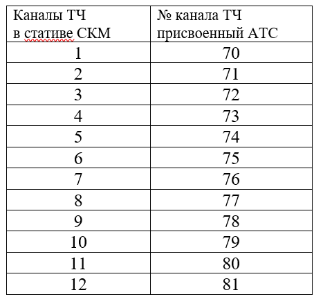
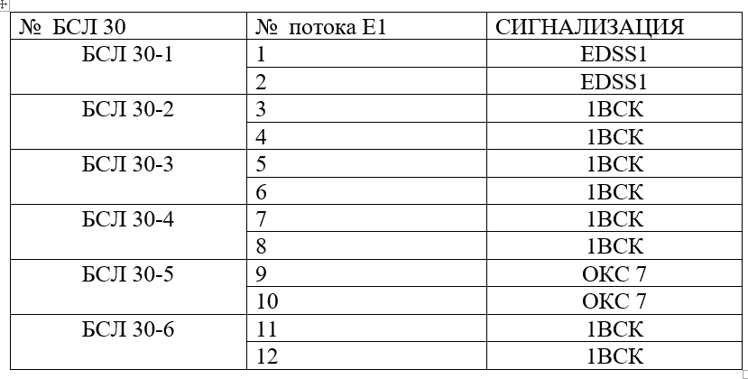
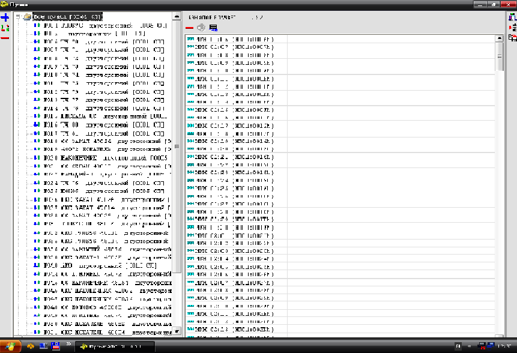
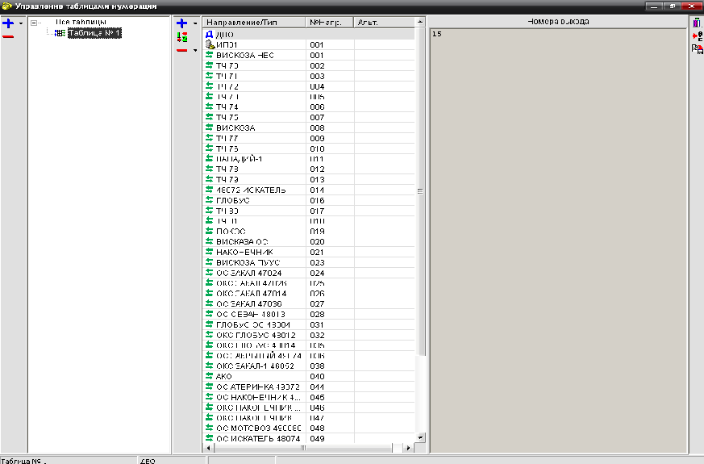
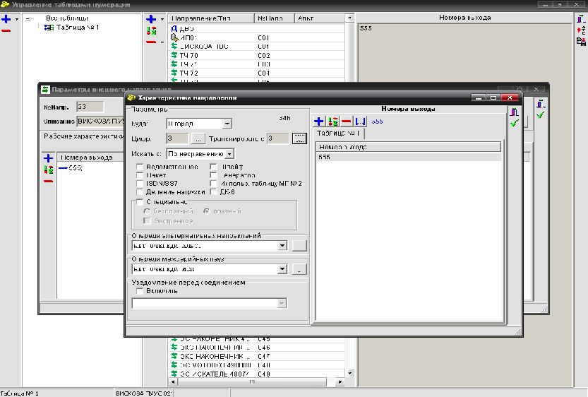
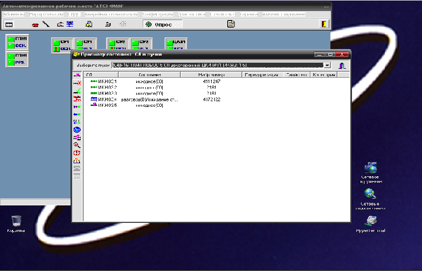

Задача № 16
Учебная цель:
Совершенствовать практические навыки в выполнении обязанностей специалистов АТС.
Условия выполнения:
Задача выполняется на развёрнутой аппаратной с оборудованными рабочими местами, к которой подключены каналообразующая аппаратная, аппаратная П-178 МБ, электропитающая станция, 5 абонентских линий с подключёнными телефонными аппаратами.
- Включить питание аппаратной.Проверить правильность фазировки питающего напряжения, величину напряжения на каждой фазе.
-
Включить станцию, АРМ администратора и телефонистов, запустить АТС.
Питание станции обеспечивается включением пакетников ПС 60/48,питание мониторов,БГС,освещение(12В),зарядка аккумуляторов.Включаем системные блоки компьютеров, после загрузки программы по запросу вводим имя и пароль пользователя на каждом рабочем месте.,осущесвляем вход в программу АТС. -
По указанию руководителя занятия прозвонить с помощью блока ПВУ(статив СКМ) пары соединительных линий. Принять от каналообразующей аппаратной на коммутатор по данным парам 4-х проводный канал тональной частоты (КТЧ), с помощью коммутации в стативе СКМ 2-х проверенных пар с линейной стороны на указанный руководителем канал ТЧ(станционная сторона). Проверить прохождение разговора и вызова по каналу, путём набора номера канала с рабочего места телефониста в соответствии с таблицей:

Рисунок 1 — Односторонняя связь (речь)
-
Организовать громкоговорящую 2-х проводную связь с аппаратными П-178 МБ.Для чего необходимо одну пару с линейной стороны от каналообразующей аппаратной коммутировать на станционную сторону каналов абонентских линий громкоговорящей связи(АЛ ГГС 1-20). На блоке связи БС выключить блокировку кнопок, установить контроль в 1-ую группу, завести абонента АЛ ГГС в группу. С помощью микрогарнитуры переговорить с приёмной стороной, оценить качество образованного канала. Возможно организовать громкоговорящую связь на рабочих местах с помощью блоков БГС, одну пару с линейной стороны завести в стативе СКМ на БГС 1 или БГС 2 станционную сторону в соответствии:
- БС-ГГС1
- БГС-ГГС2
- На БГС включить 2-х проводный режим БС или БГС.
- Испытать 5 абонентских линий с подключёнными к ним телефонными аппаратами, проверить переадресацию вызова на АРМ телефониста при наборе номера «0», определить номера телефонных аппаратов. У определённых номеров в меню АБОНЕНТЫ,РАБОТА С ГРУППОЙ АБОНЕНТОВ в допустимых и включённых ДВО в строке ПЕРЕАДРЕСАЦИЯ необходимо установить «0».
-
Организовать 5 СЛ с сигнализацией 1ВСК. Для этого:
-
Принять поток Е1 от каналообразующей аппаратуры. По двум парам завести на станционную сторону потоков Е 1 принятый поток в зависимости от сигнализации. ТЭЗ на который поступает цифровой поток называется буфер соединительных линий БСЛ 30(60).АТС обеспечивает проключение 12 потоков, одновременно возможна работа 3 систем передачи. На каждый БСЛ 30 заводится по 2 потока в соответствии с сигнализацией:
Далее на самом БСЛ 30 необходимо снять ШЛЕЙФ, по индикаторным диодам определить состояния приёма и передачи потока:
Рисунок 1 — Односторонняя связь (речь)
- ЦС- нет синхронизации
- ИЗВ- нет передачи, взаимодействия АТС
- ОШ- кодовые ошибки
- С помощью анализатора AFK3 проверить качество потока, наличие ошибок, цикловой (PCM-31), сверхцикловой синхронизации (PCM-30).
-
На рабочем месте администратора входим в закладку маршрутизация, генерация, редактирование пучка.

Рисунок 1 — Односторонняя связь (речь)
-
В окне редактирования создаём новый пучок(нажатие +), задаём характеристики (для 1ВСК-двусторонний,общий,ДКИ,ИЧ; в характеристике входящего пучка: выдавать ответ станции ;принимать весь номер/время анализа импульсов набора номера 30мс); в описании даём название, сохраняем, далее перемещаем в пучок из нераспределённых каналов 5 СЛ принятого потока Е1.Если принимаем по 1-му потоку:
- ИКМ1:1
- ИКМ1:2
- ИКМ1:3
- ИКМ1:4
- ИКМ1:5
№потока № канального интервала -
Создаём направление:
в закладке таблицы нумерации выбираем таблица № 1,

Далее создание нового направления(нажатие +),именуем, в окне параметры внешнего направления задаём рабочие характеристики:
Куда-город(постоянная длинна номера)
Цифр-7(если 4-х значная нумерация и 3 цифры префикс)
4(выход на коммутатор)
Транслировать-с 3 или 0(если «направление в направление»)

Создаём номера выхода,если направление с внутренними абонентами,то задаём нумерацию ДИАПАЗОНОМ […],например от 6011000 до 6019999 будет отображаться:- 6011ХХХ
- 6012ХХХ
- 6013ХХХ
- 6014ХХХ
- 6015ХХХ
- 6016ХХХ
- 6017ХХХ
- 6018ХХХ
- 6019ХХХ
Необходимо задать выход на коммутатор другой станции, добавляем номер из 4-х цифр:- 6010
- Во вкладке «пучки входящие в направление»делаем ссылку на созданный пучок (см. п 4), сохраняем, загружаем в АТС.
- Сброс КСУ (кассет ствольных устройств). Сброс возможно произвести как физически так и программно . Программно в окне автоматизированного рабочего места «АТСЭ ФММ»левой кнопкой мыши 2 раза кликаем по СУ1(ствольное устройство),выбираем «сброс» или «рестарт.» Физически на ТЭЗах ЦП 1(центральных процессоов) отвечающих за работу БСЛ 30 1-4, ЦП 2 БСЛ 30 5-6 нажать кнопку сброс.
-
В окне автоматизированного рабочего места «АТСЭ ФММ» во вкладке маршрутизация, «просмотре состояния СЛ в пучке» выбираем созданный пучок ,канальные интервалы будут в состоянии «закрыт»,включаем созданные каналы путём нажатия на кнопку слева с всплывающей ссылкой «включить канал», их состояние должно стать «исходное»

- Для проверки набираем номер направления, при этом по одной из СЛ должно осуществляться занятие, в трубке услышан ответ станции.
-
Принять поток Е1 от каналообразующей аппаратуры. По двум парам завести на станционную сторону потоков Е 1 принятый поток в зависимости от сигнализации. ТЭЗ на который поступает цифровой поток называется буфер соединительных линий БСЛ 30(60).АТС обеспечивает проключение 12 потоков, одновременно возможна работа 3 систем передачи. На каждый БСЛ 30 заводится по 2 потока в соответствии с сигнализацией:
Произвести необходимые записи в аппаратном журнале
РАБОТА ОЦЕНИВАЕТСЯ

Задача № 16a
Учебная цепь:
Совершенствовать практические навыки в выполнении обязанностей специалистов АТС
Условие выполнения:
Задача выполняется на развёрнутой аппаратной с оборудованными рабочими местами, к которой подключены каналообразующая аппаратная, аппаратная П-178 МБ, электропитающая станция, 5 абонентских линий с подключёнными телефонными аппаратами.
Содержание:
- Включить питание аппаратной. Проверить правильность фазировки питающего напряжения, величину напряжения на каждой фазе.
- Включить станцию, АРМ администратора и телефонистов, запустить программу АТС.
- Прозвонить с помощью блока ПВУ(статив СКМ) пары соединительных линий. Принять от каналообразующей аппаратной на коммутатор по данным парам 4-х проводный канал тональной частоты
- Организовать громкоговорящую 2-х проводную связь с аппаратными П-178 МБ
- Испытать 5 абонентских линий с подключёнными к ним телефонными аппаратами, проверить переадресацию вызова на АРМ телефониста при наборе номера «0», определить номера телефонных аппаратов.
- Организовать 5 СЛ с сигнализацией 1ВСК Произвести необходимые записи в аппаратном журнале
РАБОТА ОЦЕНИВАЕТСЯ
порядок выолнения задачи №2
- На блоке «БПСЖ» (блок находится по левой стороне от входа в аппаратную) находим «УКАЗ. ФАЗ», смотрим на индикаторы, при правильности подключения горит индикатор «прав», в случаи если горит индикатор «неправ» доложите к руководителю задачи. На блоке «БРП-Т1» (выше блока «БПСЖ») находим датчик со вольтметра, под ним тумблер. По очередности поворачиваем тумблер по часовой стрелке на каждое значение (1 фаза, 2 фаза, 3 фаза) и наблюдаем за изменениями на датчике вольтметра, стрелка указывает на вольтаж на данной фазе (допустимое значение ~220V).
- На мониторе АРМ-1, с помощью курсора компьютерной мыши, находим ярлык «Nemant.exe» (ярлык в виде желтого телефона), наводим на ярлык, и двойным кликом левой кнопки компьютерной мыши запускаем программу. В появившемся окне «Вход» вводим в поле «Имя» - admin, в поле «Пароль» - padmin, затем в появившимся окне выбираем кнопке «Нет». Программа Nemant запущена.
- «СТАТИВ СКМ» (находится по правой стороне от входа в аппаратную), взяв шнуропару на коммутационном поле находим «ПОТОКИ Е1 АТС» (слева направо сверху вниз с ИКМ-1 по ИКМ-4 первая 10-ка соединительных линий с каналообразующей/КАС аппаратной) проключаем первый штекер шнуропары в первую пару соединительного кабеля в гнездо «лин», второй штекер шнуропары проключаем в «ПВУ» в гнездо «МБ» (ПВУ находится в самом верху коммутационного поля) при этом телефонную трубку подключаем в гнездо «МТ». Вызываем каналообразующую/КАС аппаратную. При ответе в телефонной трубке, переключаем первый штекер шнуропары во вторую пару «лин» «ПОТОКА Е1 АТС», и повторно вызываем каналообразующую/КАС аппаратную, и так последовательно проверяем каждую пару соединительного кабеля (на коммутационном поле «ПОТОКА Е1 АТС» выходят только восемь пары соединительного кабеля ПРК10х2, пятая и десятая пары не выходят, счет пар на коммутационном поле осуществляется сверху вниз по две пары на каждый ИКМ, следующим образом ИКМ-1 1 пара, 2 пара; ИКМ-2 3 пара, 4 пара; ИКМ-3 6 пара, 7 пара; ИКМ-4 8 пара, 9 пара).
- Берем шнуропару (заранее обсудив с каналообразующей/КАС аппаратной по какой паре будет осуществляться служебная связь, например по 9 паре) первый штекер шнуропары проключаем в гнездо «лин» «ПОТОКА Е1 АТС» 9 пары, второй штекер шнуропары проключаем в гнездо «ст» «БГС-1» «ГГС1». После слева от монитора АРМ-1 взяв микрофон и нажав тангенту вызываем каналообразующую/КАС аппаратную, например «БП-350» «БП-240». При ответе каналооб
- По организованной служебной связи с каналообразующей/КАС аппаратной уточняем по каким парам проключен поток (например 1 пара и 2 пара). Над «СТАТИВ СКМ» на штатном месте установлен прибор AFK-3. Берем штекер шнуропары AFK-3 проключаем в гнездо «лин» «ПОТОКА Е1 АТС» в 1 пару, затем на приборе AFK-3 нажимая на сенсорный экран выбираем «Измерения», нажимаем на «Параметры линейного сигнала», смотрим на значения «Уровень» и «Частота» (при качественном потоке «Уровень» = -5дБо, «Частота» = 20480000 Гц, при значении «Уровень» = -36дБо, «Частота» = - поток отсуствует). Переключаем штекер шнуропары AFK-3 в гнездо «лин» «ПОТОКА Е1 АТС» в 2 пару смотрим на значения. Данные значения дают нам понять по какая из пар является «приёмом», а какая «передачей», если по 1 паре есть поток то она будет являться «приёмом», 2 пара «передачей». Взяв шнуропару первый штекер проключаем в гнездо «лин» «ПОТОКА Е1 АТС» 1 пары (например 1 пара является «приёмом»), второй штекер в «ст» «прм» ИКМ-5, берем еще одну шнуропару штекер первый в «лин» «ПОТОКА Е1 АТС» 2 пары, второй штекер шнуропары в «ст» «прд» ИКМ-5. Шкаф «АТСЭ ФММ» (предпоследний по правой стороне от входа в аппаратную) находим «кассету» «КПС5», в ней находим плату «БСЛ60». Для выбранной ИКМ-5, третья (слева направо) плата «БСЛ60», смотрим на первые верхние три красных индикатора (отвечающие за ИКМ-5, счет ведется с верху вниз слева направо, каждая плата отвечает за два ИКМ), если они все три погасли значит поток проключен плата закрылась (при этом стоит убедится, что не включен тумблер на плате «шлейф», в случаи если первый индикатор горит или горит ошибки, проверить закрытие платы по «шлейфу» нажав на тумблер, или поменять на коммутационном поле местами штекер «прм» и «прд»).
- На АРМ-1 в программе Nemant.exe в строке меню выбираем «Маршрутизация» - «Генерация». В появившимся окне нажимаем кнопку «Закрыть». В окне «Панель управления генерацией» в строке меню выбираем «Операция» - «Загрузить из АТС», ожидаем загрузку из АТС. Выбираем в строке меню «Маршрутизация» - «Пучки». В окне «Пучки» создаем «пучок» нажав на синий «+», в появившимся окне в поле выбираем номер пучка и нажимаем «ОК». Наводим курсор компьютерной мыши на «Нераспределенные каналы» нажимаем левой кнопкой мыши, во второй панели появятся нераспределенные СЛ. Находим ИКМ-5(так как данный ИКМ отвечает за протокол линейной сигнализации 1ВСК), и выделяем с помощью курсора мыши первые пять СЛ, нажимая и удерживая левую кнопку мыши перетаскиваем СЛ на созданный ранее пучок (при нажатии на пучок в правом поле должны отображаться добавленные СЛ). Двойным нажатием левой кнопки мыши на пучок, открывается окно «Характеристики пучка». В поле «Тип» указываем значения «Двустронний», «общий», «ДКИ», «ИП». В поле «Описание» нажав на кнопку «…» указываем название данного пучка (например Zadacha №2) нажимаем кнопку «ОК». В поле «Таблица нумерации» выбираем «Таблица №1». В закладке «Характеристики входящего пучка» отмечаем «Выдавать ответ станции/запрос о типе МГ» и «Принимать весь номер/ время анализа импульсов набора номера 30 мс». В поле «Код ЧК» выбираем «1». Нажимаем на зеленую галку. Нажимаем на иконку (в правой стороне окна «Генерации») «–АТС» (Загрузить в АТС), в окне «Confirm» нажимаем «Yes». Ожидаем загрузку в АТС, после выходим из окна «Пучки» нажав на закрыть окно. В строковом меню выбираем «Маршрутизация» - «Таблица нумерации». Выбираем в окне «Управление таблицей нумерации» «Таблица №1». Нажав на стрелку возле синего «+» выбираем «+создать новое направление» выбираем номер направления нажимаем «ОК». Наводим курсор компьютерной мыши на созданное направление и двойным нажатие левой кнопки мыши открывает окно «Параметры внешнего направления». В окне «Описание» нажав на иконку «…» вводим название нашего направления (например Zadacha №2). Во вкладке «Рабочие характеристики» нажимаем на синий «+», открывается окно «Характеристики направления». В поле «Куда:» выбираем значение «в город», в поле «Цифры» нажав на «…» ставим значение «4», в поле «Транслировать с» нажав на «…» устанавливаем значение «3», выбираем значение «Пакет». Нажав на синий «+» указываем префикс коммутатора с которым будем работать (например 601-префикс, 0-номер коммутатора), нажимаем «ОК», нажимаем зеленую «V». Еще раз нажимаем на синий «+», открывается окно «Характеристики направления». В поле «Куда:» выбираем значение «в город», в поле «Цифры» нажав на «…» ставим значение «7», в поле «Транслировать с» нажав на «…» устанавливаем значение «3», выбираем значение «Пакет». Нажав на синий «+» указываем префикс и номера узла связи с которым будем работать (например 601-префикс, 2ХХХ-номера узла связи, где Х-любое число), нажимаем «ОК», нажимаем зеленую «V». Выбираем вкладку «Пучки входящих направлений» нажимаем синий «+» в поле находим созданный пучок (например Zadacha №2) нажимаем «ОК», нажимаем зеленную «V», нажимаем на иконку «->АТС» (загрузить в АТС) в окне «Confirm» нажимаем «Yes». Ожидаем загрузку в АТС, после выходим из генерации. В строке меню «Маршрутизация» выбираем «Просмотр состояния СЛ в пучке», в появившимся окне в поле «Выберете пучок» находим созданный пучок (например Zadacha №2), в поле выделяем все СЛ, слева в меню находим значок зеленую «v» «Включить выбранные каналы» или комбинацией клавиш «Ctrl+O». Затем значок «?» «Вкл/Выкл просмотр состояния» или клавиша «F5», если настройки верны, в столбце «Состояние» напротив СЛ будет «исходное».
- Берем шнуропару прибора AFK-3 проключаем штекер шнуропары в гнездо ИКМ-5 «контр» «прд» «ПОТОКА Е1 АТС». На AFK-3 на сенсорном экране выбираем «ПРМ», ставит «v» «Вх.А.120Ом», выбираем закладку «КИ». На АРМ-1 в строке меню «Диагностика» выбираем «Проключение акустических сигналов». В окне устанавливаем выбор «Соединительные линии», в поле выбираем созданный пучок (например Zadacha №2) выделяем по очереди СЛ, сначала первый СЛ в поле «Акустические сигналы» выбираем значение «2100 Гц» нажимаем на кнопку «Проключить», на AFK-3 выбираем в кладке «КИ» номер нашего выделенного СЛ (если выбран первый СЛ на АРМ-1, то выбираем 01 на AFK-3), слышим генератор, так к же в вкладке «Ошибки» просматриваем ошибки. После выбираем на АРМ-1 в поле «Акустические сигналы» выбираем значение «Тишина» нажимаем на кнопку «Проключить». И так повторяем для каждого созданного СЛ в нашем пучке.
- В строке меню «Маршрутизация» «Просмотр состояния СЛ в пучке» в поле выбираем созданный пучок (например Zadacha №2). Выделить СЛ нажать слева в меню на значок «х» «Отключить выбранные каналы» или клавиша «Del», затем выделить один первый СЛ слева в меню находим значок зеленую «v» «Включить выбранные каналы» или комбинацией клавиш «Ctrl+O». Затем значок «?» «Вкл/Выкл просмотр состояния» или клавиша «F5». С системного аппарата набрать на коммутатор или номер узла связи с которым будем работать (например 6010 или 6012100), если в столбце «Состояние» с «исходное» изменилось и произошел ответ с узла связи с которым работаете значит данный СЛ рабочий. Опять выделяем данный СЛ нажимаем на значок «х» «Отключить выбранные каналы» или клавиша «Del». Затем выбираем следующий СЛ и повторяем тоже самое уже для этого СЛ и так с каждым созданным СЛ в нашем пучке последовательно проверив их.
- На АРМ-1 в программе Nemant.exe в строке меню выбираем «Маршрутизация» - «Генерация». В появившимся окне нажимаем кнопку «Закрыть». В окне «Панель управления генерацией» в строке меню выбираем «Операция» - «Загрузить из АТС», ожидаем загрузку из АТС. Выбираем в строке меню «Маршрутизация» - «Пучки». В окне «Пучки» создаем «пучок» нажав на синий «+», в появившимся окне в поле выбираем номер пучка и нажимаем «ОК». Наводим курсор компьютерной мыши на «Нераспределенные каналы» нажимаем левой кнопкой мыши, во второй панели появятся нераспределенные СЛ. Находим ИКМ-5(так как данный ИКМ отвечает за протокол линейной сигнализации 1ВСК), и выделяем с помощью курсора мыши одну СЛ, нажимая и удерживая левую кнопку мыши перетаскиваем СЛ на созданный ранее пучок (при нажатии на пучок в правом поле должны отображаться добавленные СЛ). Двойным нажатием левой кнопки мыши на пучок, открывается окно «Характеристики пучка». В поле «Тип» указываем значения «Двустронний», «общий», «ТЧканал», «ДК». В поле «Описание» нажав на кнопку «…» указываем название данного пучка (например ОС Zadacha №2) нажимаем кнопку «ОК». В поле «Таблица нумерации» выбираем «Таблица №1». Выбираем «прием/передача сигналов управления частотой». В закладке «Характеристики исходящего пучка» отмечаем «Не ждать лин. сигналов «АЗ»». Нажимаем на зеленую галку. Нажимаем на иконку (в правой стороне окна «Генерации») «–АТС» (Загрузить в АТС), в окне «Confirm» нажимаем «Yes». Ожидаем загрузку в АТС, после выходим из окна «Пучки» нажав на закрыть окно. В строковом меню выбираем «Маршрутизация» - «Таблица нумерации». Выбираем в окне «Управление таблицей нумерации» «Таблица №1». Нажав на стрелку возле синего «+» выбираем «+создать новое направление» выбираем номер направления нажимаем «ОК». Наводим курсор компьютерной мыши на созданное направление и двойным нажатие левой кнопки мыши открывает окно «Параметры внешнего направления». В окне «Описание» нажав на иконку «…» вводим название нашего направления (например ОС Zadacha №2). Во вкладке «Рабочие характеристики» нажимаем на синий «+», открывается окно «Характеристики направления». В поле «Куда:» выбираем значение «в город», в поле «Цифры» нажав на «…» ставим значение «3», в поле «Транслировать с» нажав на «…» устанавливаем значение «3», выбираем значение «Пакет». Нажав на синий «+» указываем номер для ОС (например «11»), нажимаем «ОК», нажимаем зеленую «V». Выбираем вкладку «Пучки входящих направлений» нажимаем синий «+» в поле находим созданный пучок (например ОС Zadacha №2) нажимаем «ОК», нажимаем зеленную «V», нажимаем на иконку «->АТС» (загрузить в АТС) в окне «Confirm» нажимаем «Yes». Ожидаем загрузку в АТС, после выходим из генерации. В строке меню «Маршрутизация» выбираем «Просмотр состояния СЛ в пучке», в появившимся окне в поле «Выберете пучок» находим созданный пучок (например ОС Zadacha №2), в поле выделяем все СЛ, слева в меню находим значок зеленую «v» «Включить выбранные каналы» или комбинацией клавиш «Ctrl+O». Затем значок «?» «Вкл/Выкл просмотр состояния» или клавиша «F5», если настройки верны, в столбце «Состояние» напротив СЛ будет «исходное».
- Берем шнуропару прибора AFK-3 проключаем штекер шнуропары в гнездо ИКМ-5 «контр» «прд» «ПОТОКА Е1 АТС». На AFK-3 на сенсорном экране выбираем «ПРМ», ставит «v» «Вх.А.120Ом», выбираем закладку «КИ». На АРМ-1 в строке меню «Диагностика» выбираем «Проключение акустических сигналов». В окне устанавливаем выбор «Соединительные линии», в поле выбираем созданный пучок (например ОС Zadacha №2) выделяем СЛ в поле «Акустические сигналы» выбираем значение «2100 Гц» нажимаем на кнопку «Проключить», на AFK-3 выбираем в кладке «КИ» номер нашего выделенного СЛ (если выбран первый СЛ на АРМ-1, то выбираем 01 на AFK-3), слышим генератор, так к же в вкладке «Ошибки» просматриваем ошибки. После выбираем на АРМ-1 в поле «Акустические сигналы» выбираем значение «Тишина» нажимаем на кнопку «Проключить». В строке меню «Маршрутизация» «Просмотр состояния СЛ в пучке» в поле выбираем созданный пучок (например ОС Zadacha №2). Выделить СЛ нажать слева в меню на значок «х» «Отключить выбранные каналы» или клавиша «Del», затем выделить СЛ слева в меню находим значок зеленую «v» «Включить выбранные каналы» или комбинацией клавиш «Ctrl+O». Затем значок «?» «Вкл/Выкл просмотр состояния» или клавиша «F5». С системного аппарата набрать номер который мы назначили для данного ОС (например «11») если в столбце «Состояние» с «исходное» изменилось и произошел ответ с узла связи с которым работаете значит данный СЛ рабочий. Опять выделяем данный СЛ нажимаем на значок «х» «Отключить выбранные каналы» или клавиша «Del».
- В строке меню «Абоненты» выбираем «Коммутатор», находим и нажимаем в окне «Коммутатора» кнопку «С» «Список» (в центре окна «Коммутатора»). В появившемся окне «Список» нажимаем на «Настройка списка», выбираем вкладку «Каналы», в поле «Направления» выбираем созданный «ОС» нажимаем «Добавить, в поле «Имя списка» даем название списку (например «ОС») нажимаем «Сохранить», в окне «Список» «ОС» отображается созданный «ОС». Нажимаем на него ожидаем ответа для проверки.
- На АРМ-1 в программе Nemant.exe в строке меню выбираем «Маршрутизация» - «Генерация». В появившимся окне нажимаем кнопку «Закрыть». В окне «Панель управления генерацией» в строке меню выбираем «Операция» - «Загрузить из АТС», ожидаем загрузку из АТС. Выбираем в строке меню «Маршрутизация» - «Пучки». В окне «Пучки» создаем «пучок» нажав на синий «+», в появившимся окне в поле выбираем номер пучка и нажимаем «ОК». Наводим курсор компьютерной мыши на «Нераспределенные каналы» нажимаем левой кнопкой мыши, во второй панели появятся нераспределенные СЛ. Находим ИКМ-5(так как данный ИКМ отвечает за протокол линейной сигнализации 1ВСК), и выделяем с помощью курсора мыши одну СЛ, нажимая и удерживая левую кнопку мыши перетаскиваем СЛ на созданный ранее пучок (при нажатии на пучок в правом поле должны отображаться добавленные СЛ). Двойным нажатием левой кнопки мыши на пучок, открывается окно «Характеристики пучка». В поле «Тип» указываем значения «Двустронний», «общий», «ТЧканал», «ДК». В поле «Описание» нажав на кнопку «…» указываем название данного пучка (например ОКС Zadacha №2) нажимаем кнопку «ОК». В поле «Таблица нумерации» выбираем «Таблица №1». Выбираем «прием/передача сигналов управления частотой». В закладке «Характеристики исходящего пучка» отмечаем «Не ждать лин. сигналов «АЗ»». Нажимаем на зеленую галку. Нажимаем на иконку (в правой стороне окна «Генерации») «–АТС» (Загрузить в АТС), в окне «Confirm» нажимаем «Yes». Ожидаем загрузку в АТС, после выходим из окна «Пучки» нажав на закрыть окно. В строковом меню выбираем «Маршрутизация» - «Таблица нумерации». Выбираем в окне «Управление таблицей нумерации» «Таблица №1». Нажав на стрелку возле синего «+» выбираем «+создать новое направление» выбираем номер направления нажимаем «ОК». Наводим курсор компьютерной мыши на созданное направление и двойным нажатие левой кнопки мыши открывает окно «Параметры внешнего направления». В окне «Описание» нажав на иконку «…» вводим название нашего направления (например ОКС Zadacha №2). Во вкладке «Рабочие характеристики» нажимаем на синий «+», открывается окно «Характеристики направления». В поле «Куда:» выбираем значение «в город», в поле «Цифры» нажав на «…» ставим значение «3», в поле «Транслировать с» нажав на «…» устанавливаем значение «3», выбираем значение «Пакет». Нажав на синий «+» указываем номер для ОС (например «555»), нажимаем «ОК», нажимаем зеленую «V». Выбираем вкладку «Пучки входящих направлений» нажимаем синий «+» в поле находим созданный пучок (например ОКС Zadacha №2) нажимаем «ОК», нажимаем зеленную «V», нажимаем на иконку «->АТС» (загрузить в АТС) в окне «Confirm» нажимаем «Yes». Ожидаем загрузку в АТС, после выходим из генерации. В строке меню «Маршрутизация» выбираем «Просмотр состояния СЛ в пучке», в появившимся окне в поле «Выберете пучок» находим созданный пучок (например ОКС Zadacha №2), в поле выделяем все СЛ, слева в меню находим значок зеленую «v» «Включить выбранные каналы» или комбинацией клавиш «Ctrl+O». Затем значок «?» «Вкл/Выкл просмотр состояния» или клавиша «F5», если настройки верны, в столбце «Состояние» напротив СЛ будет «исходное».
- Берем шнуропару прибора AFK-3 проключаем штекер шнуропары в гнездо ИКМ-5 «контр» «прд» «ПОТОКА Е1 АТС». На AFK-3 на сенсорном экране выбираем «ПРМ», ставит «v» «Вх.А.120Ом», выбираем закладку «КИ». На АРМ-1 в строке меню «Диагностика» выбираем «Проключение акустических сигналов». В окне устанавливаем выбор «Соединительные линии», в поле выбираем созданный пучок (например ОКС Zadacha №2) выделяем СЛ в поле «Акустические сигналы» выбираем значение «2100 Гц» нажимаем на кнопку «Проключить», на AFK-3 выбираем в кладке «КИ» номер нашего выделенного СЛ (если выбран первый СЛ на АРМ-1, то выбираем 01 на AFK-3), слышим генератор, так к же в вкладке «Ошибки» просматриваем ошибки. После выбираем на АРМ-1 в поле «Акустические сигналы» выбираем значение «Тишина» нажимаем на кнопку «Проключить». В строке меню «Маршрутизация» «Просмотр состояния СЛ в пучке» в поле выбираем созданный пучок (например ОКС Zadacha №2). Выделить СЛ нажать слева в меню на значок «х» «Отключить выбранные каналы» или клавиша «Del», затем выделить СЛ слева в меню находим значок зеленую «v» «Включить выбранные каналы» или комбинацией клавиш «Ctrl+O». Затем значок «?» «Вкл/Выкл просмотр состояния» или клавиша «F5». С системного аппарата набрать номер который мы назначили для данного ОС (например «555») если в столбце «Состояние» с «исходное» изменилось и произошел ответ с узла связи с которым работаете значит данный СЛ рабочий. Опять выделяем данный СЛ нажимаем на значок «х» «Отключить выбранные каналы» или клавиша «Del».
- В строке меню «Абоненты» выбираем «Работа с системными абонентами», в поле «Номер абонента» выбираем номер системного абонента в котором требуется запрограммировать кнопки (например номер системного абонента 2330), дважды нажимаем на выбранный номер левой кнопкой мыши. В поле «Панель FLEX-кнопок» выбираем на какую кнопку программировать номер ОКС, нажимаем на кнопку. В поле «Функции FLEX-кнопки» выбираем «Вызов внутр. аб.», в поле «Номер телефона» вводим номер нашего ОКС (например номер ОКС – 555), нажимаем «Применить». Проверяем на системном аппарате исходящую связь при нажатии кнопки.
- В строке меню «Абоненты» выбираем «Работа с одним абонентом». В поле «Номер» вводим номер абонента с которого осуществляется переадресация (например с абонента номер – 2331). Выбираем вкладку «Дост.ДВО», в поле «ДВО» отмечаем в столбце «ЕСТЬ» напротив «Передача вызова при занятости», в поле «Номер прямой/при занятости» вводим номер системного абонента на который будет осуществляться переадресация (например номер системного абонента – 2330), затем нажимаем «Выполнить». После выбираем вкладку «ВКЛ.ДВО», в поле «ДВО» отмечаем в столбце «ЕСТЬ» напротив «Передача вызова при занятости», в поле «Номер прямой/при занятости», нажимаем выполнить. Снимаем трубку с абонента на котором переадресация, с другого абонента набираем на абонента на котором переадресация (например номер абонента – 2331), в случаи правильности настройки должен зазвонить системный абонент на которого переадресован абонент (например системный абонент – 2330).
- В строке меню «Абоненты» выбираем «Работа с одним абонентом». В поле «Номер» вводим номер системного абонента которого следует организовать запрет входящей связи (например системный абонент – 2330). В вкладке «Состояние» нажимаем «Заблокировать абонента», при это в поле «Состояние абонента» отобразиться «заблокировано». Набираем нашего системного абонента на которого установили запрет входящей связи, и в трубке звучит системная фраза. Для отмены запрета в вкладке «Состояние» нажимаем «Разблокировать абонента», при это в поле «Состояние абонента» отобразиться «исходное».
- В строке меню «Абоненты» выбираем «Работа с одним абонентом». В поле «Номер» вводим номер абонента с которого будет осуществляться набор по поднятию трубки (например номер абонента – 2100). В вкладке «Дост.ДВО» в поле «ДВО» выбираем с столбце «ЕСТЬ» напротив «Прямая связь», в поле «Номер прямой/при занятости» вводим номер абонента на который будем дозваниваться по поднятию трубки (например номер абонента – 2331). Нажимаем «Выполнить». В вкладке «ВКЛ.ДВО» в поле «ДВО» выбираем с столбце «ЕСТЬ» напротив «Прямая связь», нажимаем «Выполнить». Проверяем снятием трубки с абонента и ожидание исходящего ответа.
- В аппаратном журнале указываем: дату, время, узел связи, № потока, количество канальных интервалов, вид связи.
- Доклад руководителю задачи например: «- Товарищ, капитан, прапорщик Иванов задачу номер 2 выволнил.»